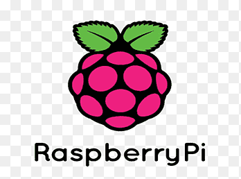

Basic OSS Architecture

I used ChatGPT to help me put together a guide/outline for the steps to set things up as I want. The reason being, I want to be able to reference the explanations here in case I need to research/learn something. In my opinion, LLMs are great for tasks like this.
This guide provides step-by-step instructions and explanations for configuring a Raspberry Pi 4 to learn about hardware, servers, virtualization, and distributed computing systems. It includes everything we’ve discussed, formatted for clarity and learning purposes.
1. Initial Setup
Hardware Requirements
- Raspberry Pi 4
- 1TB Samsung T7 SSD (connected via USB)
- Amazon Basics 128GB microSD card (or other microSD cards for boot media)
- SSH-capable devices for headless access
Installing Linux Server LTS on the SSD
- Prepare the SSD:
- Flash the Linux Server LTS image onto the SSD using tools like
balenaEtcherordd.
- Flash the Linux Server LTS image onto the SSD using tools like
- Boot from the SSD:
- Remove the microSD card and reboot the Raspberry Pi.
- Confirm successful boot by connecting via SSH.
2. Configuring MicroSD Cards
Purpose of MicroSD Cards
- Experiment with other OS installations (e.g., NetBSD).
- Use one card as a backup Linux bootloader.
- Allocate one card for portable environments or additional storage.
Steps to Use MicroSD Cards
- Format the Cards:
- Use
gpartedon Linux or similar tools to format the cards. - Choose
FAT32for compatibility orext4for Linux systems.
- Use
- Install Operating Systems:
- Download the desired OS images (e.g., NetBSD).
- Flash the image to the card using
balenaEtcherorRaspberry Pi Imager.
- Switching OS:
- Insert the appropriate microSD card and reboot the Raspberry Pi.
3. Partitioning the SSD
Why Partition the SSD?
- Organize storage for multiple OS installations or shared data.
- Separate OS environments and workloads.
Steps to Partition the SSD
Install Partitioning Tools:
sudo apt update && sudo apt install gpartedCreate Partitions:
- Open
gpartedand select your SSD. - Create the following partitions:
- Partition 1: Linux root (e.g., 100GB, ext4).
- Partition 2: NetBSD or another OS (e.g., 100GB, FFS).
- Partition 3: Shared storage (remaining space, ext4 or exFAT).
- Open
Mount Partitions:
Add entries to
/etc/fstabfor automatic mounting during boot. Replacexxxx-xxxxwith your partition’s UUID, which can be found usinglsblk -f:UUID=xxxx-xxxx /mnt/shared ext4 defaults 0 2Save and exit the file, then run:
sudo mount -aVerify the partitions are mounted correctly with:
df -h
4. LXC vs. LXD
Definitions
- LXC: Low-level tool for managing lightweight containers that share the host OS kernel.
- LXD: High-level manager for LXC, adding user-friendly features, API, and support for virtual machines (VMs).
| Feature | LXC | LXD |
|---|---|---|
| Role | Low-level container tool | High-level container and VM manager |
| Ease of Use | Manual configuration | User-friendly CLI and API |
| VM Support | No | Yes |
| Target Users | Advanced users, developers | Developers, system admins |
5. Using LXC/LXD for Virtualization
Installing LXD
sudo apt update && sudo apt install -y lxd
sudo lxd initCreating and Managing Containers
Launch a Container:
lxc launch ubuntu:20.04 my-containerList Running Containers:
lxc listAccess a Container:
lxc exec my-container -- /bin/bashSnapshot and Export:
- Create a snapshot:
lxc snapshot my-container snapshot1- Export the container as an image:
lxc publish my-container --alias my-imageDeploying Multiple VMs
Create Instances:
lxc launch my-image vm1 lxc launch my-image vm2Set Up Networking:
lxc network create my-bridge Attach containers or VMs to this network using: lxc network attach my-bridge vm1 eth0
6. Setting Up Docker, Kubernetes, and Spark
Docker
Install Docker:
sudo apt update sudo apt install -y docker.ioRun a Container:
docker run -d -p 8080:80 nginxCreate a Dockerfile:
FROM python:3.8-slim COPY app.py /app.py CMD ["python", "/app.py"] Build and run the image: docker build -t my-python-app . docker run -d my-python-app
Kubernetes (K3s)
Install K3s:
curl -sfL https://get.k3s.io | sh -Deploy Applications:
Create a deployment file (`nginx-deployment.yaml`): apiVersion: apps/v1 kind: Deployment metadata: name: nginx-deployment spec: replicas: 2 selector: matchLabels: app: nginx template: metadata: labels: app: nginx spec: containers: - name: nginx image: nginx:latest ports: - containerPort: 80Apply the deployment:
kubectl apply -f nginx-deployment.yaml
Apache Spark
Install Spark:
wget https://dlcdn.apache.org/spark/spark-3.5.0/spark-3.5.0-bin-hadoop3.tgz tar -xzf spark-3.5.0-bin-hadoop3.tgz export SPARK_HOME=~/spark-3.5.0-bin-hadoop3 export PATH=$SPARK_HOME/bin:$PATHRun Spark: Start the master:
start-master.shStart a worker:
start-worker.sh spark://<master-ip>:7077Submit a Job:
spark-submit --master spark://<master-ip>:7077 my_script.py
Docker vs. LXC/LXD
| Use Case | Recommended Tool |
|---|---|
| Packaging an app and its dependencies | Docker |
| Running a full Linux distro in a container | LXC or LXD |
| Managing containers and VMs at scale | LXD |
| Simulating enterprise clusters | LXD with Kubernetes |
| Running a multi-container app (microservices) | Docker + Kubernetes |
Conclusion
This guide outlines how to configure and use your Raspberry Pi for a robust learning environment. By combining tools like Docker, LXC/LXD, Kubernetes, and Spark, you can simulate enterprise-grade distributed computing clusters and practice advanced data engineering techniques.
If you need further assistance, feel free to revisit specific sections or ask for clarification!